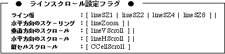

Return to previous page | Return to menu | Go to next page
void
Scroll function
Line scroll mode and vertical cell scroll mode settings
void slLineScrollModeNbg0 (mode)
void slLineScrollModeNbg1 (mode)
Uint16 mode ;
mode Line scroll mode flag
Set the line scroll mode and vertical cell scroll mode for the scroll plane.
None

Note) Each of the above values is defined in “sl_def.h” included with the system.
Reference: HARDWEAR MANUAL vol.2 (VDP2)
slLineScrollModeNbg0,1